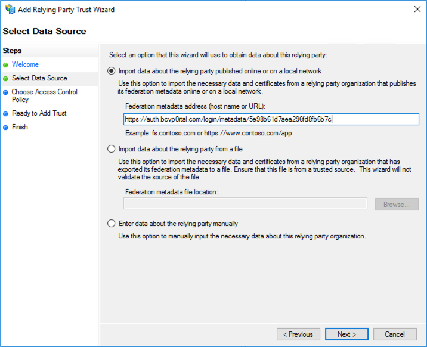

Konfiguration der Einzelanmeldung mit Active Directory Federation Services
In diesem Thema erfahren Sie, wie Sie Brightcove Engage™ so konfigurieren, dass Single Sign-On mit Active Directory Federation Services (ADFS) unterstützt wird.
Bevor Sie beginnen
Führen Sie diese Schritte zur Ersteinrichtung durch:
Aktivieren Sie RelayState für IdP-initiiertes Anmelden, indem Sie den Anweisungen hierfolgen. Der Speicherort variiert je nach der Version von ADFS, die verwendet wird.
Starten Sie den ADFS-Dienst neu, damit die Änderungen übernommen werden.
Hinzufügen eines Access Control-Profils
Öffnen Sie Verwaltung über das Startmenü oder die Systemsteuerung von Windows und öffnen Sie dann die AD FS-Management-Anwendung .
Öffnen Sie > Servicezertifikate im linken Explorer-Bereich.
Doppelklicken Sie auf das Token-Signierungszertifikat , das Sie verwenden möchten.
Klicken Sie auf die Registerkarte Details und klicken Sie auf In Datei kopieren...
Klicken Sie im Export-Assistenten auf Weiter und wählen Sie dann die Base-64-codierte X.509 (CER) Option aus.
Speichern Sie die Zertifikatsdatei in Ihrem lokalen Dateisystem. Öffnen Sie das Zertifikat in einem Texteditor. Dies ist das Zertifikat, das verwendet wird, um das Access Control Profile in Brightcove Engage einzurichten.
Öffnen Sie Brightcove Engage.
Klicken Sie auf > „Projekteinstellungen“
Klicken Sie in der linken Navigationsleiste auf Access Control-Profile .
Klicken Sie auf Create Profile.
Geben Sie ihm einen Namen und wählen Sie dann SSO - Erfordert einen Benutzernamen und ein Passwort für den Zugriff.
Geben Sie im Feld SAML 2.0 Endpoint (HTTP) die URL zur IdP-initiierten Anmeldeseite für Ihren ADFS-Server ein. Dies endet normalerweise mit IdpInitiatedSignOn.aspx. Wenn der SP-initiierte Sign-On-Link beispielsweise lautet https://sso-test.brightcove.com/adfs/ls, ist die IDP-initiierte Anmeldeseite https://sso-test.brightcove.com/adfs/ls/IdpInitiatedSignOn.aspx.
Aktivieren Sie die Option My SSO System is ADFS (Active Directory Federation Services).
Kopieren Sie das in Schritt 6 gespeicherte Zertifikat und fügen Sie es in das Feld X.509-Zertifikat ein.
Klicken Sie auf Speichern , um das Zugriffssteuerungsprofil zu speichern Das neue Zugriffssteuerungsprofil sollte in der Liste der Profile erscheinen.
Öffnen Sie in der AD FS-Management-Anwendung Relying Party Trusts.
Klicken Sie im rechten Bereich auf Vertrauender Parteiverhandung hinzufügen...
Klicken Sie im Assistenten auf Start und fügen Sie dann die Metadaten-URL , die in Schritt 15 angezeigt wurde, in das Adressfeld Federation-Metadaten ein.

Klicken Sie auf Weiter und geben Sie Ihrem vertrauenswürdigen Party-Trust einen Namen.
Klicken Sie weiter auf Weiter bis zum Schritt Beenden . Deaktivieren Sie das Kontrollkästchen Richtlinie zur Ausstellung von Ansprüchen für diese Anwendung konfigurieren . Klicken Sie auf Close.
Sie sollten jetzt in der Lage sein, ein Erlebnis mit dem erstellten Zugriffssteuerungsprofil zu verknüpfen. Nachdem die Erfahrung veröffentlicht wurde, sollte die Navigation zu ihr den ADFS-Sign-On-Workflow durchlaufen.
 Kontaktieren Sie Support
Kontaktieren Sie Support Systemstatus
Systemstatus